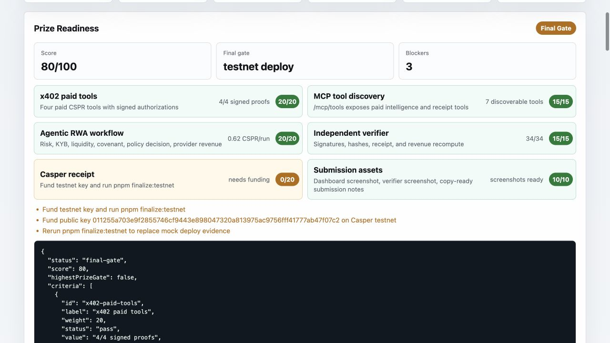
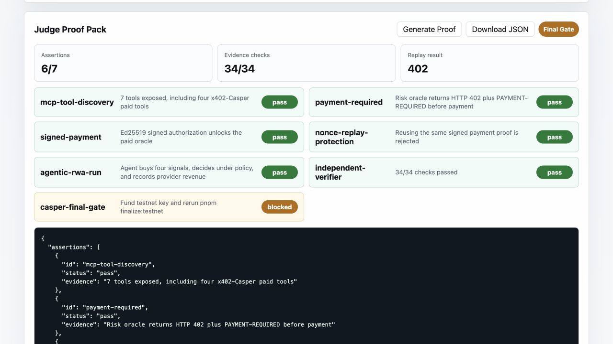
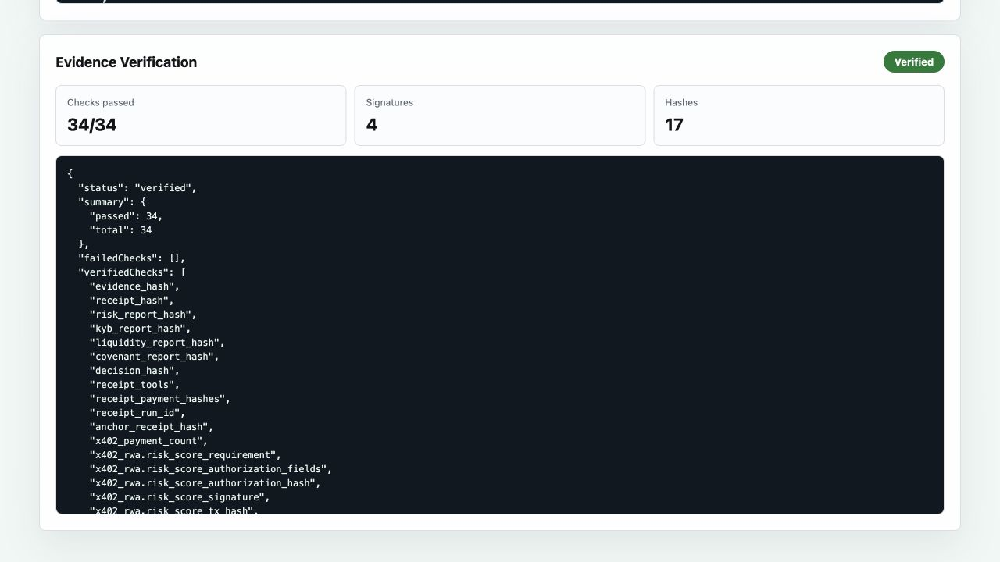
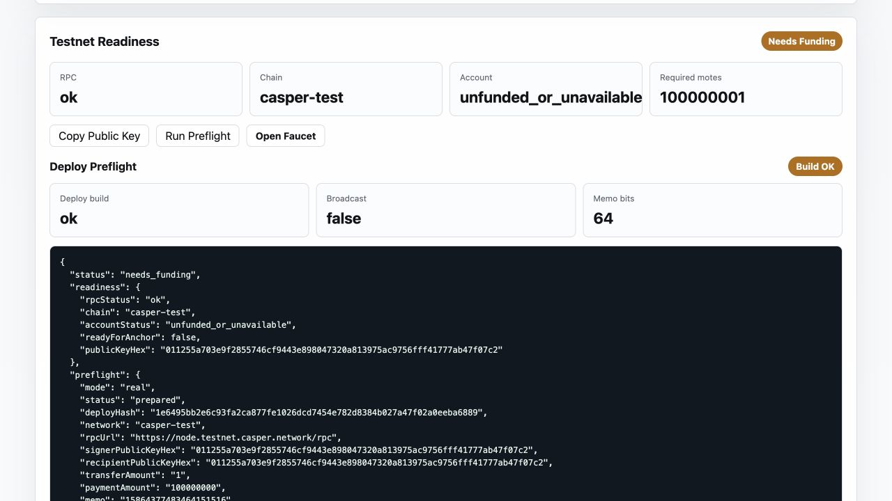

Why This Should Score At The Top
Competitive Edge
Beyond x402 API demos
CSPR Guardian uses x402 as part of an autonomous business workflow:
paid discovery, signed payment, replay rejection, provider revenue,
four testnet settlement anchors, allocation decision, and final receipt.
Beyond portfolio agents
The RWA allocation is evidence-gated. Risk, KYB, liquidity, and
covenant signals must be paid for and verified before capital moves.
Beyond single-scenario demos
The same paid tool stack handles treasury, invoice-finance, and
trade-credit assets with distinct policy outcomes.
Beyond screenshots
Judges can inspect JSON proof packs, hashes, test output, CI-ready
commands, and a public Casper transaction instead of trusting copy.
Beyond static proof lists
The browser verifier fetches every public proof artifact and
recomputes SHA-256 hashes against the manifest in the judge's browser.
Beyond opaque agent demos
The architecture map shows trust boundaries for payment challenge,
replay safety, settlement anchors, policy decisions, verification,
and secret handling in one screen.
Beyond overclaimed prototypes
The judge FAQ separates real testnet evidence, reproducible sample
provider data, and production requirements before reviewers have to ask.
Beyond mock chain claims
The public submission includes a real Casper testnet receipt and a
funded testnet account, while keeping private keys out of artifacts.
Public benchmark brief: why this stands above visible buildathon categories.
End-To-End Flow
- DiscoverMCP-style paid RWA tools are listed before the agent calls them.
- PayEach oracle returns HTTP 402, then unlocks with an Ed25519 x402-Casper proof.
- AnalyzeRisk, KYB, liquidity, and covenant reports are gathered for the RWA asset.
- DecideThe agent makes a capped allocation decision with policy constraints.
- ProveEvidence hashes, payment proofs, and receipt metadata verify independently.
Proof Screens





Current Submission State
Repo published Walkthrough video published CI ready x402 settlement preflight verified x402 settlement anchors published Testnet account funded Real Casper receipt publishedThe final seal is ready for highest-prize submission. The Casper testnet receipt is published and the prize-readiness gate is cleared at 100/100 with zero blockers.
Links
Reality boundary and judge FAQ
64-second final walkthrough video
Judge proof room with public artifacts
011255a703e9f2855746cf9443e898047320a813975ac9756fff41777ab47f07c2